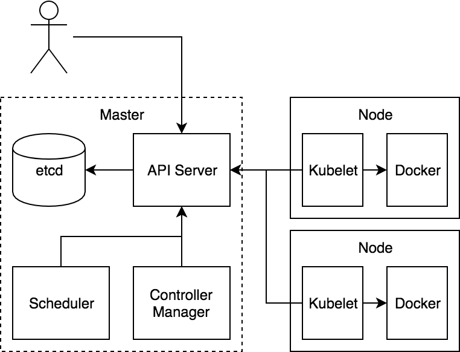
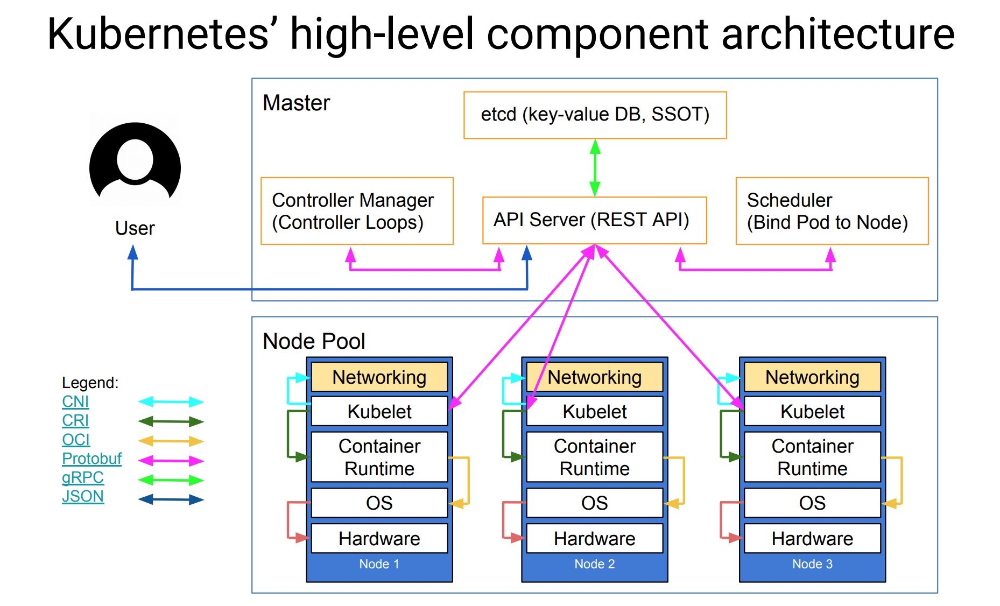
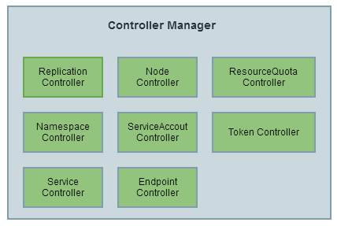
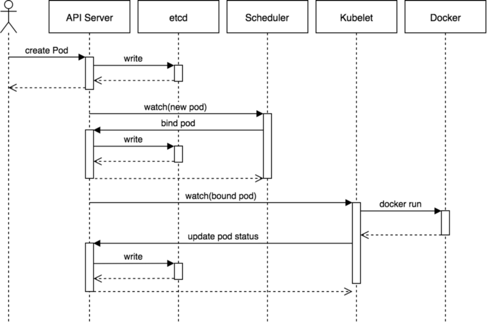
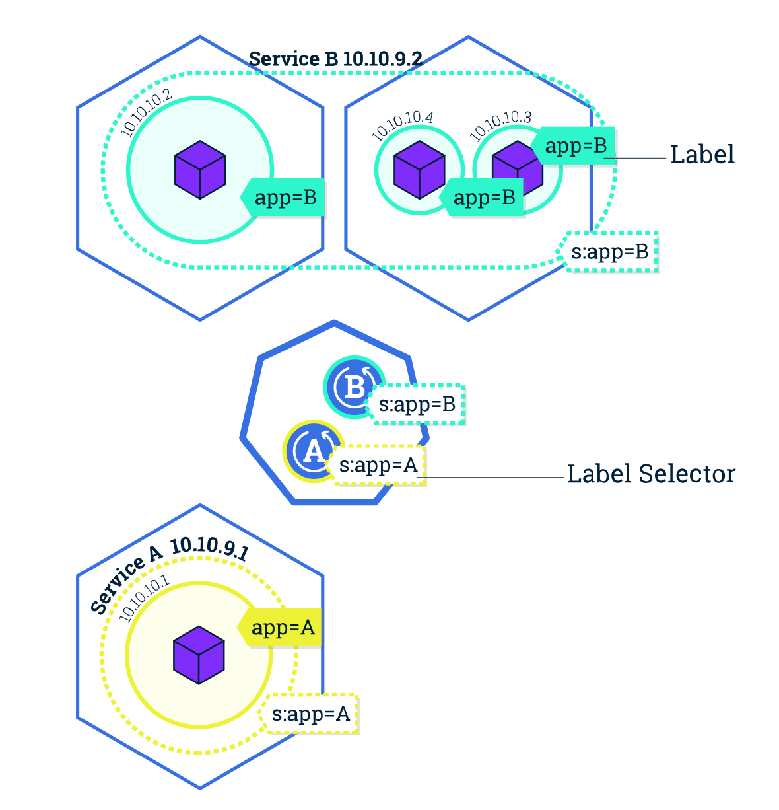

K8S简介¶
Kubernetes 基本概念与组件
Kubernetes（简称 K8S） 的出现是容器化技术发展的必然结果，容器化是应用程序级别的虚拟化，运行单个内核上有多个独立的用户空间实例，这些实例就是容器；容器提供了将应用程序的代码、运行时、系统工具、系统库和配置打包到一个实例中的标准方法，而且容器是共享一个内核的；由于容器技术的兴起，导致大量的容器应用出现，所以就出现了一些用来支持应用程序容器化部署和组织的容器编排技术，一些流行的开源容器编排工具有 Docker Swarm、Kubernetes 等，但是在发展过程中 Kubernetes 现在已经成为了容器编排领域事实上的一个标准了。
Kubernetes 是 Google 团队发起的一个开源项目，它的目标是管理跨多个主机的容器，用于自动部署、扩展和管理容器化的应用程序，主要实现语言为 Go 语言，他的理论基础来源与 Google 内部的 Borg 项目，所以 Kubernetes 项目的理论基础就比其他开源项目要“先进”很多，因为 Borg 系统一直依赖就被称为 Google 公司内部最强大的“私密武器”。
架构¶
Kubernetes 项目依托着 Borg 项目的理论优势，确定了一个如下图所示的全局架构图： 
从上面我们可以看出 Kubernetes 由 Master 和 Node 两种节点组成，这两种角色分别对应着控制节点和工作节点（可以理解为老板和员工）。
其中 Master 节点由三个独立的组件组成，它们分别是负责整个集群通信的 API 服务的 kube-apiserver、负责容器调度的 kube-scheduler 以及负责维护集群状态的 kube-controller-manager 组件。整个集群的数据都是通过 kube-apiserver 保存到 etcd 数据库中的，而其他所有组件的通信也都是通过 kube-apiserver 和 etcd 数据库进行通信的，都不会直接和 etcd 进行通信。
工作节点上最核心的组件就是 kubelet，当然还有底层的容器运行时，比如 Docker，其中 kubelet 就是主要来实现和底层的容器运行时进行通信的，这个通信的过程也被 Kubernetes 抽象成了一个 CRI（Container Runtime Interface）的远程调用接口，这个接口里面定义了容器运行时的所有标准操作，比如创建容器、删除容器等等。所以对于 Kubernetes 来说他根本不关心你部署的到底是什么容器运行时，只要你这个容器运行时可以实现 CRI 接口就可以被 Kubernetes 来管理。
kubelet 的另外一个重要功能就是调用网络插件（CNI）和存储插件（CSI）为容器配置网络和存储功能，同样的 kubelet 也是把这两个重要功能通过接口暴露给外部了，所以如果我们想要实现自己的网络插件，只需要使用 CNI 就可以很方便的对接到 Kubernetes 集群当中去。
可能下面的架构图看上去更清晰一些： 
组件¶
上面我介绍了 Kubernetes 集群的整体架构，下面我们再来更加详细的了解下这些组件的功能。
kube-apiserver¶
API Server 提供了资源对象的唯一操作入口，其它所有组件都必须通过它提供的 API 来操作资源数据。只有 API Server 会与 etcd 进行通信，其它模块都必须通过 API Server 访问集群状态。API Server 作为 Kubernetes 系统的入口，封装了核心对象的增删改查操作。API Server 以 RESTFul 接口方式提供给外部客户端和内部组件调用，API Server 再对相关的资源数据（全量查询 + 变化监听）进行操作，以达到实时完成相关的业务功能。以 API Server 为 Kubernetes 入口的设计主要有以下好处：
- 保证了集群状态访问的安全
- API Server 隔离了集群状态访问和后端存储实现，这样 API Server 状态访问的方式不会因为后端存储技术 Etcd 的改变而改变，让后端存储方式选择更加灵活，方便了整个架构的扩展
kube-controller-manager¶

Controller Manager 用于实现 Kubernetes 集群故障检测和恢复的自动化工作。主要负责执行各种控制器：
- Replication Controller：主要是定期关联 Replication Controller (RC) 和 Pod，以保证集群中一个 RC (一种资源对象) 所关联的 Pod 副本数始终保持为与预设值一致。
- Node Controller：Kubelet 在启动时会通过 API Server 注册自身的节点信息，并定时向 API Server 汇报状态信息。API Server 在接收到信息后将信息更新到 Etcd 中。Node Controller 通过 API Server 实时获取 Node 的相关信息，实现管理和监控集群中的各个 Node 节点的相关控制功能。
- ResourceQuota Controller：资源配额管理控制器用于确保指定的资源对象在任何时候都不会超量占用系统上物理资源。
- Namespace Controller：用户通过 API Server 可以创建新的 Namespace 并保存在 Etcd 中，Namespace Controller 定时通过 API Server 读取这些 Namespace 信息来操作 Namespace。比如：Namespace 被 API 标记为优雅删除，则将该 Namespace 状态设置为 Terminating 并保存到 Etcd 中。同时 Namespace Controller 删除该 Namespace 下的 ServiceAccount、Deployment、Pod 等资源对象。
- Service Account Controller：服务账号控制器主要在命名空间内管理 ServiceAccount，以保证名为 default 的 ServiceAccount 在每个命名空间中存在。
- Token Controller：令牌控制器作为 Controller Manager 的一部分，主要用作：监听 serviceAccount 的创建和删除动作以及监听 secret 的添加、删除动作。
- Service Controller：服务控制器主要用作监听 Service 的变化。比如：创建的是一个 LoadBalancer 类型的 Service，Service Controller 则要确保外部的云平台上对该 Service 对应的 LoadBalancer 实例被创建、删除以及相应的路由转发表被更新。
- Endpoint Controller：Endpoints 表示了一个 Service 对应的所有 Pod 副本的访问地址，而 Endpoints Controller 是负责生成和维护所有 Endpoints 对象的控制器。Endpoint Controller 负责监听 Service 和对应的 Pod 副本的变化。定期关联 Service 和 Pod (关联信息由 Endpoint 对象维护)，以保证 Service 到 Pod 的映射总是最新的。
kube-scheduler¶
Scheduler 是负责整个集群的资源调度的，主要的职责如下所示：
- 主要用于收集和分析当前 Kubernetes 集群中所有 Node 节点的资源 (包括内存、CPU 等) 负载情况，然后依据资源占用情况分发新建的 Pod 到 Kubernetes 集群中可用的节点
- 实时监测 Kubernetes 集群中未分发和已分发的所有运行的 Pod
- 实时监测 Node 节点信息，由于会频繁查找 Node 节点，所以 Scheduler 同时会缓存一份最新的信息在本地
- 在分发 Pod 到指定的 Node 节点后，会把 Pod 相关的 Binding 信息写回 API Server，以方便其它组件使用
kubelet¶
kubelet 是负责容器真正运行的核心组件，主要的职责如下所示：
- 负责 Node 节点上 Pod 的创建、修改、监控、删除等全生命周期的管理
- 定时上报本地 Node 的状态信息给 API Server
- kubelet 是 Master 和 Node 之间的桥梁，接收 API Server 分配给它的任务并执行
- kubelet 通过 API Server 间接与 Etcd 集群交互来读取集群配置信息
- kubelet 在 Node 上做的主要工作具体如下：
- 设置容器的环境变量、给容器绑定 Volume、给容器绑定 Port、根据指定的 Pod 运行一个单一容器、给指定的 Pod 创建 Network 容器
- 同步 Pod 的状态
- 在容器中运行命令、杀死容器、删除 Pod 的所有容器
kube-proxy¶
kube-proxy 是为了解决外部网络能够访问集群中容器提供的应用服务而设计的，Proxy 运行在每个Node 上。
每创建一个 Service，kube-proxy 就会从 API Server 获取 Services 和 Endpoints 的配置信息，然后根据其配置信息在 Node 上启动一个 Proxy 的进程并监听相应的服务端口。
当接收到外部请求时，kube-proxy 会根据 Load Balancer 将请求分发到后端正确的容器处理。
kube-proxy 不但解决了同一宿主机相同服务端口冲突的问题，还提供了 Service 转发服务端口对外提供服务的能力。
kube-proxy 后端使用随机、轮循等负载均衡算法进行调度。
kubectl¶
Kubectl 是 Kubernetes 的集群管理命令行客户端工具集。通过 Kubectl 命令对 API Server 进行操作，API Server 响应并返回对应的命令结果，从而达到对 Kubernetes 集群的管理
核心资源对象¶
上面我们都是在架构层面了解 Kubernetes，但是似乎没有发现关于容器的说明，Kubernetes 作为容器编排引擎，那么他是怎么去对容器进行编排的呢？在 Kubernetes 集群中抽象了很多集群内部的资源对象，我们可以通过这些资源对象去操作容器的编排工作。
Pod¶
Pod 是一组紧密关联的容器集合，它们共享 PID、IPC、Network 和 UTS namespace，是Kubernetes 调度的基本单位。Pod 的设计理念是支持多个容器在一个 Pod 中共享网络和文件系统，可以通过进程间通信和文件共享这种简单高效的方式组合完成服务。我们知道容器本质上就是进程，那么 Pod 实际上就是进程组了，只是这一组进程是作为一个整体来进行调度的。

在 Kubernetes 中，所有资源对象都使用资源清单（yaml或json）来定义，比如我们可以定义一个简单的 nginx 服务，它包含一个镜像为 nginx 的容器：(nginx-pod.yaml)
apiVersion: v1
kind: Pod
metadata:
name: nginx
labels:
app: nginx
spec:
containers:
- name: nginx
image: nginx
ports:
- containerPort: 80
Pod 在 Kubernetes 集群中被创建的基本流程如下所示： 
- 用户通过 REST API 创建一个 Pod
- apiserver 将其写入 etcd
- scheduluer 检测到未绑定 Node 的 Pod，开始调度并更新 Pod 的 Node 绑定
- kubelet 检测到有新的 Pod 调度过来，通过 container runtime 运行该 Pod
- kubelet 通过 container runtime 取到 Pod 状态，并更新到 apiserver 中
Label¶
Label 标签在 Kubernetes 资源对象中使用很多，也是非常重要的一个属性，Label 是识别 Kubernetes 对象的标签，以 key/value 的方式附加到对象上（key最长不能超过63字节，value 可以为空，也可以是不超过253字节的字符串）上面我们定义的 Nginx 的 Pod 就添加了一个 app=nginx 的 Label 标签。Label 不提供唯一性，并且实际上经常是很多对象（如Pods）都使用相同的 Label 来标志具体的应用。Label 定义好后其他对象可以使用 Label Selector 来选择一组相同 Label 的对象（比如 Service 用 Label 来选择一组 Pod）。Label Selector 支持以下几种方式：
- 等式，如
app=nginx和env!=production - 集合，如
env in (production, qa) - 多个 Label（它们之间是
AND关系），如app=nginx,env=test
Namespace¶
Namespace（命名空间）是对一组资源和对象的抽象集合，比如可以用来将系统内部的对象划分为不同的项目组或用户组。常见的 Pods、Services、Deployments 等都是属于某一个 Namespace 的（默认是default），比如上面我们的 Nginx Pod 没有指定 namespace，则默认就在 default 命名空间下面，而 Node, PersistentVolumes 等资源则不属于任何 Namespace，是全局的。
Warning
注意它并不是 Linux Namespace，二者没有任何关系，它只是 Kubernetes 划分不同工作空间的一个逻辑单位。
Deployment¶
我们说了 Pod 是 Kubernetes 集群中的最基本的调度单元，但是如果想要创建同一个容器的多份拷贝，需要一个一个分别创建出来么，那么能否将 Pods 划到一个逻辑组里面呢？Deployment 就是来管理 Pod 的资源对象。
Deployment 确保任意时间都有指定数量的 Pod“副本”在运行。如果为某个 Pod 创建了 Deployment 并且指定3个副本，它会创建3个 Pod，并且持续监控它们。如果某个 Pod 不响应，那么 Deployment 会替换它，始终保持总数为3。
如果之前不响应的 Pod 恢复了，现在就有4个 Pod 了，那么 Deployment 会将其中一个终止保持总数为3。如果在运行中将副本总数改为5，Deployment 会立刻启动2个新 Pod，保证总数为5。持回滚和滚动升级。
当创建 Deployment 时，需要指定两个东西：
- Pod 模板：用来创建 Pod 副本的模板
- Label 标签：Deployment 需要监控的 Pod 的标签。
现在已经创建了 Pod 的一些副本，那么这些副本上如何进行负载呢？如何把这些 Pod 暴露出去呢？这个时候我们就需要用到 Service 这种资源对象了。
Service¶
Service 是应用服务的抽象，通过 Labels 为应用提供负载均衡和服务发现。匹配 Labels 的 Pod IP 和端口列表组成 Endpoints，由 kube-proxy 负责将服务 IP 负载均衡到这些 Endpoints 上。
每个 Service 都会自动分配一个 cluster IP（仅在集群内部可访问的虚拟地址）和 DNS 名，其他容器可以通过该地址或 DNS 来访问服务，而不需要了解后端容器的运行。 
迁移
了解了上面的几个基本概念后，我们就完全可以把我们的容器服务迁移到 Kubernetes 集群上了。当然我们还得先搭建好我们的 Kubernetes 集群环境。